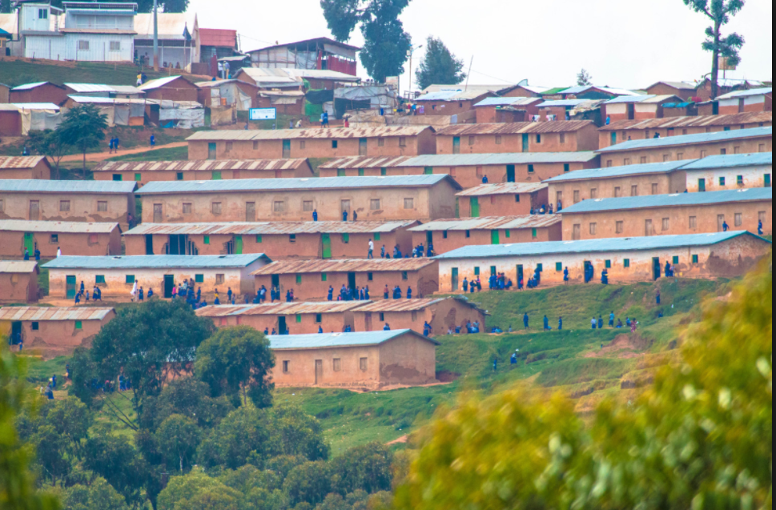
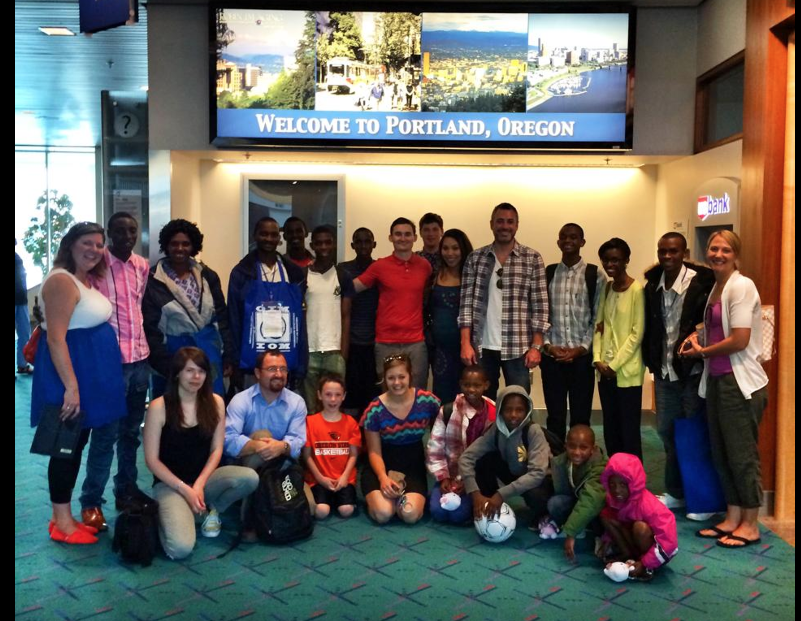

1. Life in Rwanda
Houses and life in general
My family and I moved to Rwanda in 1997 from the Congo. We fled Congo because of conflicts and we had to go to Rwanda where we lived in a refugee camp for 17 years. Life was not easy in the refugee camp, there was no running water and no electricity. We were living off of 24 cents a day from the UN. We were living in small houses.The photo below shows some of the houses in the camp. The roofs of these houses were plastic sheetings.
Education in the camp
The education in the camp was run by an NGO that was helping to pay for all the kids to go school. This NGO paid only up to 9th grade and past 9th there was no help. It was hard for parents and the kids to see kids dropping out of school because they could not afford to pay for it.
2. Coming to the USA
No one in my family ever thought we would ever come to the US. Our hope was that one day we would go back to our home country in the Congo, but as the time went on, Congo became more unsecured. The UN had a program to resettle refugees in the US, but we never thought we would be lucky nough to be one of the families that would be selected to move to US. The vetting process would take like 2 years or more. By surprise, we were called that we had 4 dyas to get ready to move. We were so excited. we said bye to our relatives and we packed and we moved here.
